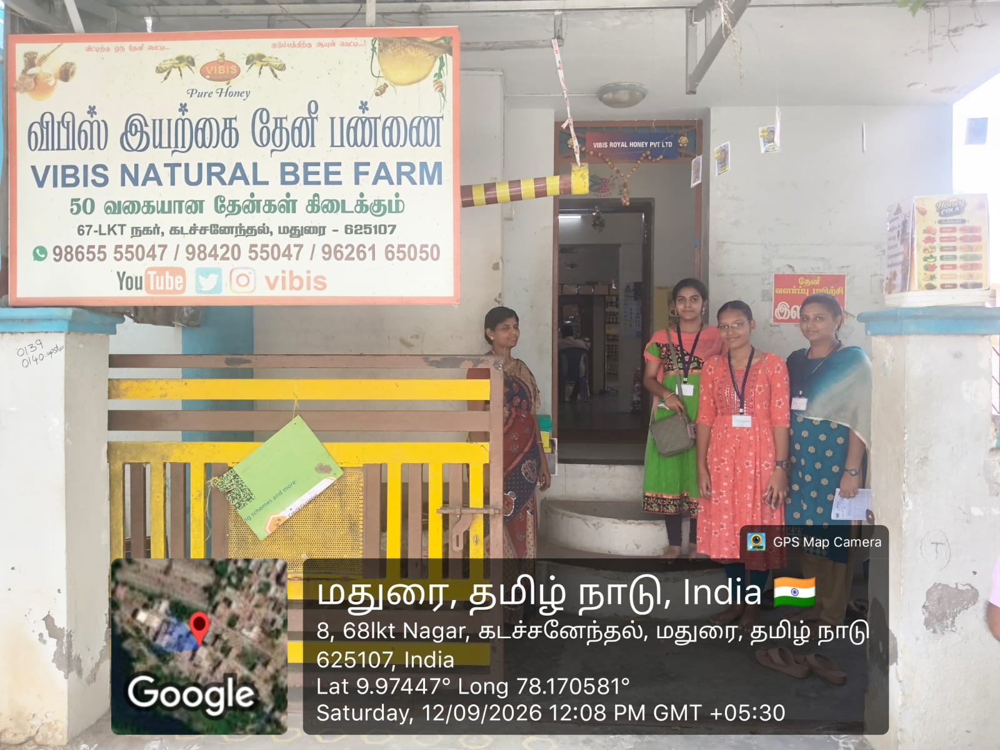
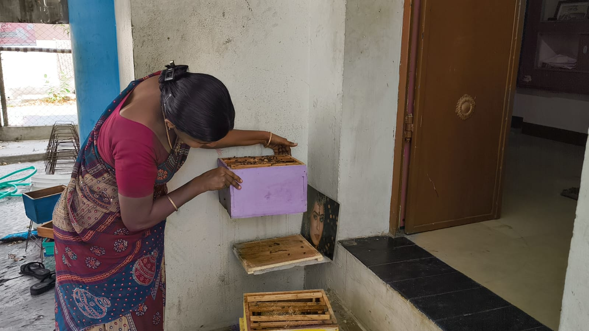
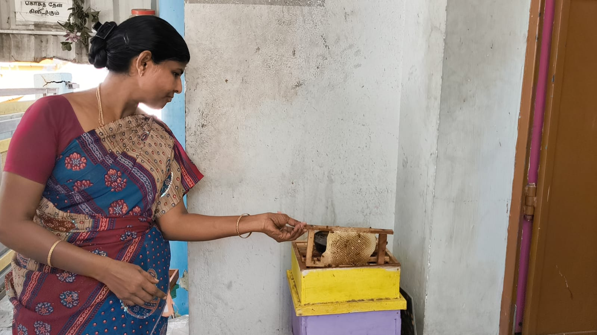

Bee Safety
Explore cleaning methods designed to minimize disturbance to the colony.
DESIGN THINKING PROJECT · FIVEFORGE
Exploring a non-intrusive cleaning system for beehives through stakeholder insights, engineering ideas and thoughtful design.
Explore Our Project ↓PROJECT STATUS: SOLUTION UNDER EVALUATION
01 / DEFINE
Through stakeholder interviews and team discussions, we identified the need to explore a cleaning approach that minimizes disturbance to honeybees.
How might we design a non-intrusive beehive cleaning system that removes accumulated debris while minimizing disturbance to honeybees and maintaining a safe hive environment?
02 / WHY IT MATTERS
Our stakeholder interaction helped us understand the importance of careful hive maintenance and bee health.
Explore cleaning methods designed to minimize disturbance to the colony.
Investigate ways to remove accumulated debris through a practical mechanism.
Consider hive cleanliness as part of responsible maintenance and colony care.
03 / WHO BENEFITS?
Potential support for routine hive cleaning and maintenance.
A design goal focused on reducing unnecessary disturbance during cleaning.
Potential for a practical approach to regular hive care.
04 / EMPATHIZE
Our team visited VIBIS Natural Bee Farm to learn about local beekeeping practices.
FIELDWORK / VIBIS NATURAL BEE FARM
Learning from real-world beekeeping practices through team fieldwork.



05 / IDEATE
Our team explored multiple engineering ideas for hive maintenance. The motorized brush is our proposed solution; the other three are brainstormed alternatives. Final selection is pending faculty evaluation.
A non-intrusive beehive cleaning system that uses a motorized brush to gently sweep fallen debris, wax particles, and dead mites from the hive's bottom mesh. The loosened waste is collected in a tray placed beneath the cleaning area, preventing debris from scattering. This design helps maintain hive hygiene while minimizing disturbance to the bees and reducing manual cleaning effort.
A removable sliding sheet installed beneath the beehive mesh to collect fallen debris, wax particles, and dead mites. It allows easy removal and cleaning without disturbing the bee colony, helping maintain hive hygiene and simplifying routine maintenance.
This modular beehive design uses an under-chassis roller track mechanism that allows the bottom waste module to be unlocked and smoothly rolled out for easy cleaning. The upper brood and honey boxes stay completely stationary on a permanent frame, ensuring zero hive lifting and zero bee disturbance during maintenance.
An automated beehive cleaning system that integrates sensors with a slow-moving conveyor belt and replaceable sticky sheet to collect mites and debris. A debris detection sensor activates the conveyor when waste is detected, while a bee detection sensor stops the motor when a bee enters the cleaning area, ensuring safer and more efficient operation with minimal manual effort.
Evaluation note: All concepts require further assessment of bee safety, feasibility, maintenance and cost. The final choice has not yet been confirmed by faculty.
06 / TEAM FIVEFORGE
An interdisciplinary team working together on a Design Thinking project.
ECE
Team LeaderECE
Task ExecutorECE
Financial Officer / DesignerCSE
Web MasterEEE
RecorderPROJECT MENTORS
Professor (CAS) & Dean (Infrastructure)
Professor